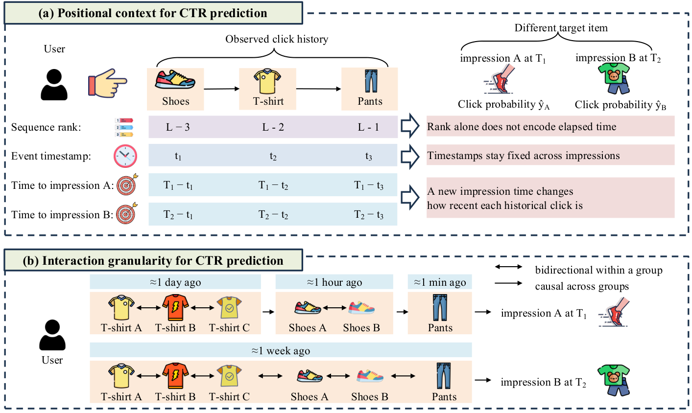
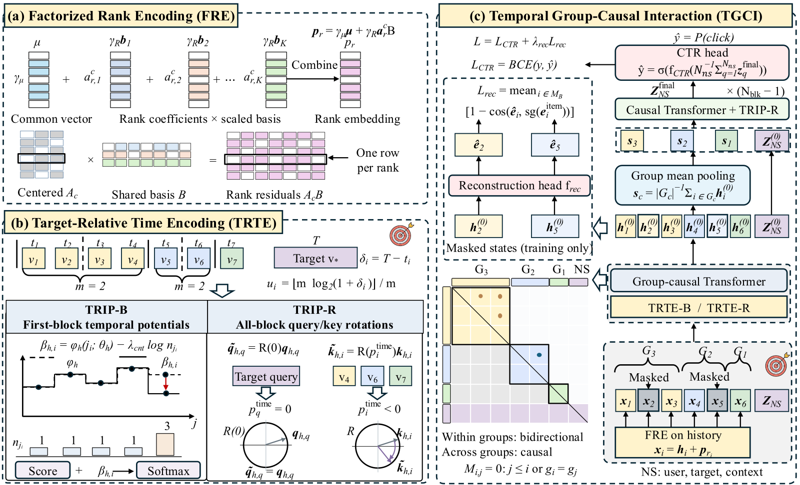

在 OneTrans 这类统一 Transformer 的 CTR 模型里，给行为序列加位置编码本来是默认操作，但作者在快手的 KuaiRand 数据上试了六种位置编码（可学习的绝对位置、正弦位置、RoPE、按时间的 RoPE 等），没有一种比完全不加位置编码（NoPE）更好。另一个现象是，把历史行为按“离这次曝光多久”分成几组，组内互相都能看见、组间保持先后顺序，AUC 比逐个行为的因果 attention 和完全双向的 attention 都高。武汉大学和腾讯的这篇论文据此提出 TRIP（作者给整套方法起的名字）：每个行为同时编码“在序列里排第几”和“离这次预测过去了多久”，并按这个时间距离分组交互。在四个公开数据集上，它的 AUC 比最强基线平均相对提升 1.47%，在腾讯广告数据集 TAAC（腾讯公开的广告点击序列数据）上最高提升 4.45%。
做排序模型的团队值得读，因为它回答的是一个大家照搬语言模型时很少追问的问题：CTR 序列里的“位置”到底该是什么。同一段历史，换一个曝光时间，每个行为离现在多远就全变了，而序号和时间戳都不会变，这是语言模型的位置编码天然没有考虑的。论文的每个部件都有对应的消融，位置编码部分还在另外两个基座上单独验证过。需要留意的是，实验全部是公开数据集上的离线 AUC，没有线上结果；分组边界是固定的对数区间，不随用户变化。
它到底在解决什么问题？
先看一个例子（示意）。一个用户最近点过三件商品：一双鞋、一件 T 恤、一条裤子。
| 历史行为 | 序号 | 点击时间 | 离曝光 A（今天中午）多久 | 离曝光 B（一周后）多久 |
|---|---|---|---|---|
| 鞋 | 倒数第 3 | 昨天中午 | 约 1 天 | 约 8 天 |
| T 恤 | 倒数第 2 | 今天 11 点 | 约 1 小时 | 约 7 天 |
| 裤子 | 倒数第 1 | 今天 11:59 | 约 1 分钟 | 约 7 天 |
对曝光 A 来说，裤子是一分钟前的事，几乎代表当下的意图；鞋是一天前的事。对一周后的曝光 B 来说，这三个行为差不多都是“一周前”，区别不大。可是序号（倒数第几）和点击时间戳在两次预测里完全一样。只编码序号的位置编码分不清这两种情况，只编码时间戳的也分不清，因为真正决定行为有多相关的是“离这次预测多久”。

交互粒度也是同样的道理。一个小时内连续看的两双鞋，代表同一段兴趣，互相补充信息是合理的；因果 attention 只让后看的那双看到前一双，等于把同一段兴趣硬拆成先后。完全双向的 attention 又反过来，把一天前和一分钟前的行为混在一起，丢掉了兴趣的演变方向。
整体流程

| 环节 | 输入 | 做什么 | 产出 |
|---|---|---|---|
| 序号编码 FRE | 每个行为在序列里的序号 | 用几个共享基向量的组合表示每个序号 | 加到行为 token 上的位置向量 |
| 时间编码 TRTE | 每个行为离这次预测的秒数 | 转成对数刻度，给 attention 加偏置或做旋转 | 预测侧 token（由用户、候选物品和上下文字段构造的全部非序列 token）读历史时的时间偏好 |
| 分组交互 TGCI | 同样的时间距离 | 按对数区间分组，组内双向、组间因果 | 第一层后每组一个摘要 |
| 后续层 | 组摘要和用户、物品等非序列 token | 普通因果 Transformer | CTR 预测 |
分工一句话：序号说明行为在序列里的上下文，时间距离说明它和这次预测有多相关，分组决定谁和谁一起交互。下面拆开讲。
为什么序号编码要做成低秩？
作者先做了一个观察：在 OneTrans 里学出来的绝对位置 embedding 表，用 PCA 只保留几个主方向重建，效果几乎不掉；TAAC 上 1 个方向、KuaiRand 上 4 个方向就接近完整表的 AUC。这说明几百个位置的 embedding 其实挤在一个很低维的空间里。
FRE（Factorized Rank Encoding，作者起的名字）据此把位置表拆成两部分：一个所有位置共享的公共向量，加上每个位置自己的 K 个系数乘以 K 个共享基向量。参数量从 L×D 降到 D + L×K + K×D，L 是序列长度，D 是隐层维度。以 TaobaoAd 为例，序列长 300、隐层 64、K 取 4，完整位置表要 19,200 个参数，FRE 只要 1,520 个，少了约 12 倍。系数会先减去所有位置的平均值，这样公共向量负责“这是历史行为”这个共同部分，系数只负责位置之间的差别。
只用在历史 token 上，非序列 token 不加。替换实验里，FRE 在四个数据集上都和完整位置表持平或更好。
时间距离怎么用？
TRTE（Target-Relative Time Encoding）先把每个行为离这次预测的秒数 δ 转成对数刻度：
m 是每个对数区间再细分几份。对数刻度的意思是越近越精细、越远越粗。按秒算，1 分钟前的刻度约 5.9，1 小时前约 11.8，1 天前约 16.4，1 周前约 19.2。所以一分钟和一小时之间隔着约 6 个刻度，一天和一周之间只隔约 3 个，说明近处的时间差被放大、远处的被压缩。
有了刻度，论文给出两种用法。TRIP-B 给每个 attention head 学一张“时间区间→偏置”的表，只在第一层、只在预测侧 token 读历史时，把偏置加到 attention 分数上，不同 head 可以学出不同的时间偏好。TRIP-R 则像 RoPE 一样，把历史行为放在负的时间轴上、预测侧 token 放在原点，用时间坐标旋转 query 和 key，所有层都用。压缩后，把组内行为时间戳的平均值四舍五入，作为组摘要的代表时间，再据此计算后续层使用的目标相对时间坐标。
TRIP-B 还多了一步密度修正。
φ 是学到的时间偏好，n 是这个样本在该时间区间里有多少个行为，λ 是修正强度。算一个例子（示意）：某个区间里有 3 个行为，另一个区间只有 1 个，内容分数都一样。不修正时，前一个区间合计拿到 3 份权重，仅仅因为它行为多。λ 取 0.5 时，每个行为的权重乘以 3 的 −0.5 次方约 0.58，合计约 1.73 份，人多的区间仍然占优，但不再是成倍占优。四个数据集上最好的 λ 都不为零，KuaiRec 上从不修正的 0.8488 提到 0.8510。
组内双向、组间因果怎么实现？
TGCI（Temporal Group-Causal Interaction）用同样的时间距离分组：组号是 1 + log₂(1+δ) 向下取整，上限 32。这意味着每组覆盖的时间跨度是上一组的两倍。分好组之后，attention mask 的规则只有一条：行为 i 能看到行为 j，当且仅当 j 在 i 之前，或者两者在同一组。
拿开头的例子（示意）：对曝光 A，一小时前看的两双鞋落在同一组，它们互相可见；一分钟前的裤子在更近的一组，能看到鞋，鞋却看不到裤子。换成一周后的曝光 B，这些行为离曝光都在一周左右，大多落进同一组，变成全部互相可见。分组是跟着每次预测的时间重新算的，同一段历史对不同曝光会有不同的交互结构。
输入序列先放历史 token，再放预测侧 token。第一层之后，每组的行为表示取平均，压成一个组摘要；组摘要按时间先后排列，替换历史 token，后面的层共同处理组摘要和保留的预测侧状态。最终将全部预测侧状态取平均，再送入 CTR 预测头，输出点击概率。这样后面几层的序列长度从 L 个行为降到非空组的个数。训练时还会在组内随机遮掉一部分行为的物品 embedding，让模型用同组其他行为把它重建出来，作为辅助损失，推理时关掉。
实验结果
实验用了四个公开数据集：快手短视频的 KuaiRec 和 KuaiRand、腾讯广告的 TAAC、淘宝展示广告 TaobaoAd。对比了 11 个模型，包括 DCNv2、DIN、DIEN、RankMixer，以及 OneTrans、HyFormer、MixFormer 这类统一 Transformer 模型。所有模型用同样的硬件、优化器和训练轮数，基线也都保留了时间戳特征，三个随机种子取平均。
| 模型 | KuaiRec AUC | KuaiRand AUC | TAAC AUC | TaobaoAd AUC |
|---|---|---|---|---|
| DIN | 0.8447 | 0.7705 | 0.6042 | 0.6235 |
| OneTrans | 0.8443 | 0.7694 | 0.6067 | 0.6276 |
| MixFormer | 0.8438 | 0.7754 | 0.6042 | 0.6265 |
| TRIP-B | 0.8512 | 0.7778 | 0.6337 | 0.6299 |
| TRIP-R | 0.8506 | 0.7731 | 0.6331 | 0.6292 |
TRIP-B 在四个数据集上 AUC 都最高，TAAC 上的提升最明显。KuaiRand 上 TRIP-B 的 LogLoss 反而更高，作者查下来是某个正样本率很低的场景里概率估高了，对 TRIP-B 和 MixFormer 都应用验证集拟合的校准后，两者的 LogLoss 差距从 0.0300 降到 0.0011，说明问题出在校准而不是排序能力。
位置编码能不能单独用？作者去掉分组交互，只把 FRE 加时间编码装进 OneTrans、HyFormer、MixFormer 三个基座，和八种位置编码比。12 个组合里，两个版本至少有一个拿到最高 AUC；TAAC 上 TRIP-R 的编码给 OneTrans 带来 4.20% 的相对提升。这说明这套位置编码不依赖 TRIP 的其他部件，可以单独迁移。
消融里有两个结果最能说明设计。去掉 FRE 或去掉时间编码，TAAC 的 AUC 分别从 0.6337 掉到 0.6066 和 0.6073，两者缺一不可，序号和时间距离提供的是不同的信息。分组方式换成随机分组或按序号连续切分，且保持每组大小不变，AUC 都比按时间分组低，说明收益来自“按离预测多久分组”，而不只是压缩本身。
相比不使用组摘要的版本，使用组摘要后训练每步耗时降低 6.3% 到 32.8%，AUC 还略有提升。TaobaoAd 上 TRIP-B 每步 72.63 毫秒，和 OneTrans 的 73.78 毫秒相当，明显快于 HyFormer 的 147.23 毫秒。
我认为它的局限
第一，没有线上验证。四个数据集都是公开离线数据，TAAC 之外的提升都在千分位，KuaiRec 上从 0.8449 到 0.8512，放到工业数据上能剩多少不好说。
第二，固定的对数分组可能对不上真实的兴趣切换。作者自己也承认这一点：一个用户十分钟内从看鞋切到看手机，两个行为可能落进同一组，是否同组取决于各自离预测时刻的时间差和固定区间边界。组内取平均也会抹掉单个行为的区别。
第三，部分超参对数据集敏感。FRE 的 K 在 TAAC 上从 1 加到 10，AUC 从 0.6095 涨到 0.6340，再加大又下降；时间细分 m 在 KuaiRand 上越细越好，在 TAAC 和 TaobaoAd 上取 1 最好，换数据集需要重新调。
一个排序团队可以怎么试
- 先做最便宜的诊断：在现有序列模型里把位置编码换成 NoPE 跑一次，如果效果不掉甚至更好，说明当前的位置编码没起作用。
- 加一个“离本次请求多少秒”的对数刻度偏置，只加在候选 token 读历史的 attention 上，配上密度修正。这一步不改结构，最容易上线验证。
- 把位置表换成低秩分解，看参数少了以后 AUC 是否持平。
- 最后再试分组 mask 和组摘要。它改动最大，但同时能省后面几层的计算，对长序列更有价值。
总评
最关键的启发是：CTR 序列的位置应该以本次预测时刻为原点来定义，而不是照搬语言模型的序号。
| 维度 | 评价 |
|---|---|
| 问题重要性 | 高。统一 Transformer 排序模型正在普及，位置编码几乎都是照搬来的 |
| 方法创新性 | 中高。单个部件都不复杂，但“以预测时刻为原点”的视角把位置编码和交互粒度统一了起来 |
| 实验证据 | 中。四个数据集、11 个基线、三个基座的迁移和细致消融，但只有离线 AUC |
| 工程成本 | 低到中。时间偏置几乎零成本，分组 mask 要改 attention 实现 |
| 是否值得尝试 | 值得，尤其是时间偏置和 NoPE 诊断，成本很低 |
读完这篇，你觉得
夜读鸮记下了，谢谢你的反馈。
点一下即可，无需登录；再点一次撤回。只统计匿名次数，不记录你是谁。
讨论
欢迎补充实验细节、复现经验或不同看法。需 GitHub 登录。
正在加载讨论…